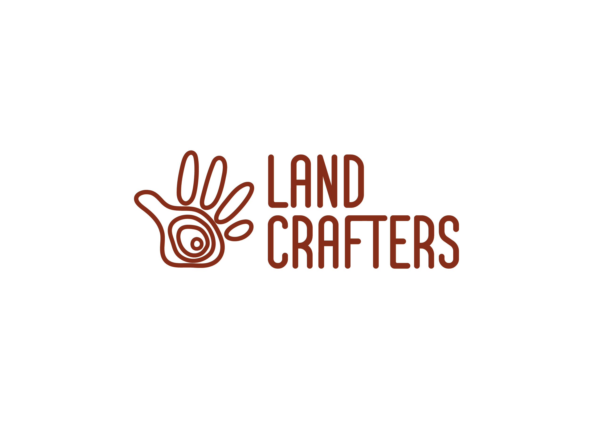

Logotype Design Process
✦ Research Phase
I conducted extensive research on logotypes, colors, and landscaping designs. My focus was primarily on landscaping for buildings, where I observed beautifully crafted gardens and balconies from an aerial perspective. This exploration revealed a theme of “organized nature,” emphasizing the interconnectedness of landscaping and architecture. I wanted to convey that the landscaping and building elements were one cohesive design rather than separate entities.
✦ Inspiration Gathering
In my research, I noted a significant prevalence of leaf designs in existing logotypes, while flowers were less frequently represented. This inspired me to seek originality, leading me to favor a topographical style that deviated from the typical leaf-centric designs. I gathered visual references showcasing organic drawings and aerial views of landscapes, reinforcing the idea of a seamless blend between nature and modern architecture.
✦ Initial Concept Development
I began the concept development process by exploring conventional logotype designs, heavily featuring leaves. However, I quickly discarded these clichés to search for something more unique. I experimented with monograms, eventually revisiting my inspiration sheet and recognizing the lack of hands or craftsmanship represented in existing designs. This realization guided me toward the concept of integrating topographical lines into the shape of a hand, which symbolized both artistry and a connection to the land.
✦ Refinement of Concepts
After deciding to use the topographical map concept, I realized that I needed to ensure the design remained subtle and not overly literal. While I briefly considered a style where fingers would hold various natural elements, I ultimately settled on a simpler approach that effectively conveyed the brand's identity.
✦ Typography Selection
One of the challenges I faced was balancing the organic feel of the logotype with appropriate typography. While it might have been easier to use a hand-drawn font to match the organic aesthetic, I opted for an upbeat typography for “LandCrafters.” This decision aimed to project the idea of organic, 'hand crafted', and clarity in the brand's representation.
✦ Detailing and Fine-tuning
In the detailing phase, I focused on manipulating line weights to reflect the organic nature of topographical maps while ensuring clarity and scalability. It was crucial to create a design that would maintain its integrity across various applications, particularly for smaller formats like promotional items, ensuring legibility even at reduced sizes.
✦ Color Palette Decision
I knew from the outset that I wanted to utilize a earthly colors palette. This choice aligned with the brand's emphasis on nature while also conveying a sense of handcrafting and organic. I aimed for consistency in color application across different branding materials.
✦ Application of Design
Visualizing the logotype's application on various items was an integral part of my design process. I considered practical uses and placements to ensure the branding would enhance visibility and recognition. Whether on paper or screens, I wanted the design to resonate with the brand’s identity.
✦ Finalization

With the design process complete, I compiled the final images and mockups to showcase the logotype in action. This demonstrated its effectiveness in representing LandCrafters and its mission of integrating landscaping with modern architecture.